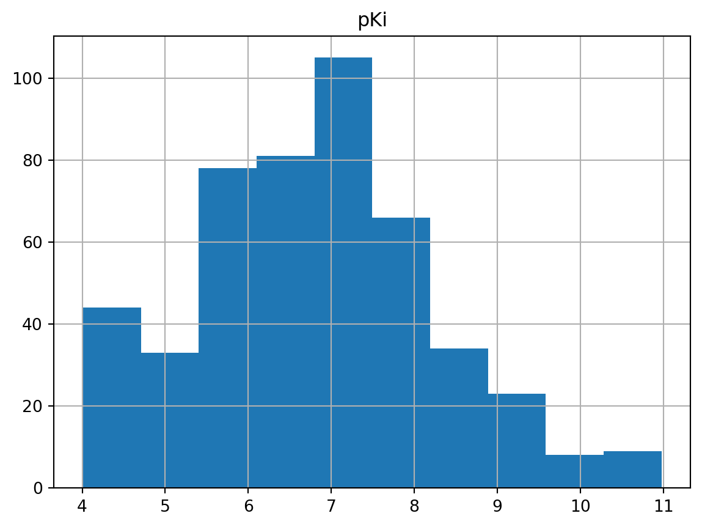

# Import all libraries used
import pandas as pd
import math
from rdkit.Chem import Descriptors
import datamol as dm
# tqdm library used in datamol's batch descriptor code
from tqdm import tqdmData source
The data used in part 2 of data pre-processing was extracted from ChEMBL database by using ChEMBL webresource client in Python. The details of all the steps taken to reach the final .csv file could be seen in this earlier post. Since data preparation and cleaning was a well-known process that would take up a lot of time before doing anything significant on the data, I’ve splitted this process into two posts to ensure reasonable reading time for each.
Re-import saved data
Re-imported the partly pre-processed data from the earlier post.
dtree_df = pd.read_csv("ache_chembl.csv")
dtree_df.head()| Unnamed: 0 | molecule_chembl_id | Ki | units | data_validity_comment | smiles | |
|---|---|---|---|---|---|---|
| 0 | 0 | CHEMBL11805 | 0.104 | nM | Potential transcription error | COc1ccccc1CN(C)CCCCCC(=O)N(C)CCCCCCCCN(C)C(=O)... |
| 1 | 1 | CHEMBL208599 | 0.026 | nM | NaN | CCC1=CC2Cc3nc4cc(Cl)ccc4c(N)c3[C@@H](C1)C2 |
| 2 | 2 | CHEMBL60745 | 1.630 | nM | NaN | CC[N+](C)(C)c1cccc(O)c1.[Br-] |
| 3 | 3 | CHEMBL95 | 151.000 | nM | NaN | Nc1c2c(nc3ccccc13)CCCC2 |
| 4 | 4 | CHEMBL173309 | 12.200 | nM | NaN | CCN(CCCCCC(=O)N(C)CCCCCCCCN(C)C(=O)CCCCCN(CC)C... |
Noticed there was an extra index column (named “Unnamed: 0”), likely inherited from how the .csv file was saved, dropping this column for now.
dtree_df = dtree_df.drop("Unnamed: 0", axis = 1)
dtree_df.head()| molecule_chembl_id | Ki | units | data_validity_comment | smiles | |
|---|---|---|---|---|---|
| 0 | CHEMBL11805 | 0.104 | nM | Potential transcription error | COc1ccccc1CN(C)CCCCCC(=O)N(C)CCCCCCCCN(C)C(=O)... |
| 1 | CHEMBL208599 | 0.026 | nM | NaN | CCC1=CC2Cc3nc4cc(Cl)ccc4c(N)c3[C@@H](C1)C2 |
| 2 | CHEMBL60745 | 1.630 | nM | NaN | CC[N+](C)(C)c1cccc(O)c1.[Br-] |
| 3 | CHEMBL95 | 151.000 | nM | NaN | Nc1c2c(nc3ccccc13)CCCC2 |
| 4 | CHEMBL173309 | 12.200 | nM | NaN | CCN(CCCCCC(=O)N(C)CCCCCCCCN(C)C(=O)CCCCCN(CC)C... |
Calculate pKi
The distribution of Ki values were shown below via a simple statistical summary.
dtree_df.describe()| Ki | |
|---|---|
| count | 5.400000e+02 |
| mean | 2.544039e+05 |
| std | 4.103437e+06 |
| min | 1.700000e-03 |
| 25% | 2.437500e+01 |
| 50% | 1.995000e+02 |
| 75% | 3.100000e+03 |
| max | 9.496300e+07 |
From the above quick statistical summary and also the code below to find the minimum Ki value, it confirmed that there were no zero Ki values recorded.
dtree_df["Ki"].min()0.0017Now we could convert the Ki values to pKi values, which were the negative logs of Ki in molar units (a PubChem example might help to explain it a little further). The key to understand pKi here was to treat pKi similarly to how we would normally understand pH for our acids and bases. The formula to convert Ki to pKi for nanomolar (nM) units was:
\[ \text{pKi} = 9 - log _{10}(Ki) \]
Set up a small function to do the conversion.
def calc_pKi(Ki):
pKi_value = 9 - math.log10(Ki)
return pKi_valueApplying the calc_pKi function to convert all rows of the compound dataset for the “Ki” column (please scroll to the very right to see it).
# Create a new column for pKi
# Apply calc_pKi function to the data in Ki column
dtree_df["pKi"] = dtree_df.apply(lambda x: calc_pKi(x.Ki), axis = 1)The dataframe would now look like this, with a new pKi column.
dtree_df.head()| molecule_chembl_id | Ki | units | data_validity_comment | smiles | pKi | |
|---|---|---|---|---|---|---|
| 0 | CHEMBL11805 | 0.104 | nM | Potential transcription error | COc1ccccc1CN(C)CCCCCC(=O)N(C)CCCCCCCCN(C)C(=O)... | 9.982967 |
| 1 | CHEMBL208599 | 0.026 | nM | NaN | CCC1=CC2Cc3nc4cc(Cl)ccc4c(N)c3[C@@H](C1)C2 | 10.585027 |
| 2 | CHEMBL60745 | 1.630 | nM | NaN | CC[N+](C)(C)c1cccc(O)c1.[Br-] | 8.787812 |
| 3 | CHEMBL95 | 151.000 | nM | NaN | Nc1c2c(nc3ccccc13)CCCC2 | 6.821023 |
| 4 | CHEMBL173309 | 12.200 | nM | NaN | CCN(CCCCCC(=O)N(C)CCCCCCCCN(C)C(=O)CCCCCN(CC)C... | 7.913640 |
Plan other data pre-processing steps
However, for a decision tree model, a few more molecular descriptors were most likely needed rather than only Ki or pKi and SMILES. One way to do this could be through computations based on canonical SMILES of compounds by using RDKit to add some molecular descriptors.
However, before doing this, a compound sanitisation step should be applied before starting any calculations to rule out compounds with questionable chemical validities. RDKit or Datamol (a Python wrapper library built based on RDKit) was also capable of doing this.
I’ve added a quick step here to convert the data types of “smiles” and “data_validity_comment” columns to string (in case of running into problems later).
dtree_df = dtree_df.astype({"smiles": "string", "data_validity_comment": "string"})
dtree_df.dtypesmolecule_chembl_id object
Ki float64
units object
data_validity_comment string
smiles string
pKi float64
dtype: objectCheck data validity
Also, before jumping straight to compound sanitisation, I remembered that I needed to check the “data_validity_comment” column.
dtree_df["data_validity_comment"].unique()<StringArray>
['Potential transcription error', <NA>, 'Outside typical range']
Length: 3, dtype: stringThere were 3 different types of data validity comments found, which were “NaN”, “Outside typical range” and “Potential transcirption error”. So, this meant compounds with comments other than “NaN” would need to be addressed first.
# Find out number of compounds with "outside typical range" as data validity comment
dtree_df_err = dtree_df[dtree_df["data_validity_comment"] == "Outside typical range"]
print(dtree_df_err.shape)
dtree_df_err.head()(58, 6)| molecule_chembl_id | Ki | units | data_validity_comment | smiles | pKi | |
|---|---|---|---|---|---|---|
| 111 | CHEMBL225198 | 0.0090 | nM | Outside typical range | O=C(CCc1c[nH]c2ccccc12)NCCCCCCCNc1c2c(nc3cc(Cl... | 11.045757 |
| 114 | CHEMBL225021 | 0.0017 | nM | Outside typical range | O=C(CCCc1c[nH]c2ccccc12)NCCCCCNc1c2c(nc3cc(Cl)... | 11.769551 |
| 118 | CHEMBL402976 | 313700.0000 | nM | Outside typical range | CN(C)CCOC(=O)Nc1ccncc1 | 3.503485 |
| 119 | CHEMBL537454 | 140200.0000 | nM | Outside typical range | CN(C)CCOC(=O)Nc1cc(Cl)nc(Cl)c1.Cl | 3.853252 |
| 120 | CHEMBL3216883 | 316400.0000 | nM | Outside typical range | CN(C)CCOC(=O)Nc1ccncc1Br.Cl.Cl | 3.499764 |
There were a total of 58 compounds with Ki outside typical range.
# Find out number of compounds with "potential transcription error" as data validity comment
dtree_df[dtree_df["data_validity_comment"] == "Potential transcription error"]| molecule_chembl_id | Ki | units | data_validity_comment | smiles | pKi | |
|---|---|---|---|---|---|---|
| 0 | CHEMBL11805 | 0.104 | nM | Potential transcription error | COc1ccccc1CN(C)CCCCCC(=O)N(C)CCCCCCCCN(C)C(=O)... | 9.982967 |
There was one compound with potential transcription errors for Ki value.
These compounds with questionable Ki values were removed, as they could be potential sources of errors for ML models later on (error trickling effect). One of the ways I thought of doing was to fill the empty cells within the “data_validity_comment” column first, so it would be easier to filter them out.
# Fill "NaN" entries with an actual name e.g. zero
dtree_df = dtree_df.fillna("none")
dtree_df.head()| molecule_chembl_id | Ki | units | data_validity_comment | smiles | pKi | |
|---|---|---|---|---|---|---|
| 0 | CHEMBL11805 | 0.104 | nM | Potential transcription error | COc1ccccc1CN(C)CCCCCC(=O)N(C)CCCCCCCCN(C)C(=O)... | 9.982967 |
| 1 | CHEMBL208599 | 0.026 | nM | none | CCC1=CC2Cc3nc4cc(Cl)ccc4c(N)c3[C@@H](C1)C2 | 10.585027 |
| 2 | CHEMBL60745 | 1.630 | nM | none | CC[N+](C)(C)c1cccc(O)c1.[Br-] | 8.787812 |
| 3 | CHEMBL95 | 151.000 | nM | none | Nc1c2c(nc3ccccc13)CCCC2 | 6.821023 |
| 4 | CHEMBL173309 | 12.200 | nM | none | CCN(CCCCCC(=O)N(C)CCCCCCCCN(C)C(=O)CCCCCN(CC)C... | 7.913640 |
Filtered out only the compounds with nil data validity comments.
#dtree_df["data_validity_comment"].unique()
dtree_df = dtree_df[dtree_df["data_validity_comment"] == "none"]Checking the dtree_df dataframe again and also whether if only the compounds with “none” labelled for “data_validity_comment” column were kept (and other two types were removed).
print(dtree_df.shape)
dtree_df["data_validity_comment"].unique()(481, 6)<StringArray>
['none']
Length: 1, dtype: stringSanitise compounds
I’ve found the pre-processing molecules tutorial and its reference links provided by Datamol to be very informative. Each steps of fix_mol(), sanitize_mol() and standardize_mol() were explained in the link provided above. I guess the key was to select pre-processing options required to fit the purpose of the ML models being built later on, and more experiences in doing so would hopefully help with improving the compound pre-processing step.
# _preprocess function to sanitise compounds - adapted from datamol.io
smiles_column = "smiles"
dm.disable_rdkit_log()
def _preprocess(row):
# Convert each compound to a RDKit molecule in the smiles column
mol = dm.to_mol(row[smiles_column], ordered=True)
# Fix common errors in the molecules
mol = dm.fix_mol(mol)
# Sanitise the molecules
mol = dm.sanitize_mol(mol, sanifix=True, charge_neutral=False)
# Standardise the molecules
mol = dm.standardize_mol(
mol,
# Switch on to disconnect metal ions
disconnect_metals=True,
normalize=True,
reionize=True,
# Switch on "uncharge" to neutralise charges
uncharge=True,
# Taking care of stereochemistries of compounds
stereo=True,
)
# Added a new column below for RDKit molecules
row["rdkit_mol"] = dm.to_mol(mol)
row["standard_smiles"] = dm.standardize_smiles(dm.to_smiles(mol))
row["selfies"] = dm.to_selfies(mol)
row["inchi"] = dm.to_inchi(mol)
row["inchikey"] = dm.to_inchikey(mol)
return rowThen the compound sanitisation function was applied to the dtree_df.
dtree_san_df = dtree_df.apply(_preprocess, axis = 1)
dtree_san_df.head()| molecule_chembl_id | Ki | units | data_validity_comment | smiles | pKi | rdkit_mol | standard_smiles | selfies | inchi | inchikey | |
|---|---|---|---|---|---|---|---|---|---|---|---|
| 1 | CHEMBL208599 | 0.026 | nM | none | CCC1=CC2Cc3nc4cc(Cl)ccc4c(N)c3[C@@H](C1)C2 | 10.585027 | <rdkit.Chem.rdchem.Mol object at 0x120ddf4c0> | CCC1=CC2Cc3nc4cc(Cl)ccc4c(N)c3[C@@H](C1)C2 | [C][C][C][=C][C][C][C][=N][C][=C][C][Branch1][... | InChI=1S/C18H19ClN2/c1-2-10-5-11-7-12(6-10)17-... | QTPHSDHUHXUYFE-KIYNQFGBSA-N |
| 2 | CHEMBL60745 | 1.630 | nM | none | CC[N+](C)(C)c1cccc(O)c1.[Br-] | 8.787812 | <rdkit.Chem.rdchem.Mol object at 0x120ddf840> | CC[N+](C)(C)c1cccc(O)c1.[Br-] | [C][C][N+1][Branch1][C][C][Branch1][C][C][C][=... | InChI=1S/C10H15NO.BrH/c1-4-11(2,3)9-6-5-7-10(1... | CAEPIUXAUPYIIJ-UHFFFAOYSA-N |
| 3 | CHEMBL95 | 151.000 | nM | none | Nc1c2c(nc3ccccc13)CCCC2 | 6.821023 | <rdkit.Chem.rdchem.Mol object at 0x120ddeff0> | Nc1c2c(nc3ccccc13)CCCC2 | [N][C][=C][C][=Branch1][N][=N][C][=C][C][=C][C... | InChI=1S/C13H14N2/c14-13-9-5-1-3-7-11(9)15-12-... | YLJREFDVOIBQDA-UHFFFAOYSA-N |
| 4 | CHEMBL173309 | 12.200 | nM | none | CCN(CCCCCC(=O)N(C)CCCCCCCCN(C)C(=O)CCCCCN(CC)C... | 7.913640 | <rdkit.Chem.rdchem.Mol object at 0x120ddf060> | CCN(CCCCCC(=O)N(C)CCCCCCCCN(C)C(=O)CCCCCN(CC)C... | [C][C][N][Branch2][Branch1][Ring1][C][C][C][C]... | InChI=1S/C42H70N4O4/c1-7-45(35-37-25-17-19-27-... | VJXLWYGKZGTXAF-UHFFFAOYSA-N |
| 5 | CHEMBL1128 | 200.000 | nM | none | CC[N+](C)(C)c1cccc(O)c1.[Cl-] | 6.698970 | <rdkit.Chem.rdchem.Mol object at 0x120ddf760> | CC[N+](C)(C)c1cccc(O)c1.[Cl-] | [C][C][N+1][Branch1][C][C][Branch1][C][C][C][=... | InChI=1S/C10H15NO.ClH/c1-4-11(2,3)9-6-5-7-10(1... | BXKDSDJJOVIHMX-UHFFFAOYSA-N |
Please note if the dataset required for sanitisation is large, Datamol has suggested using their example code to add parallelisation as shown below.
```{python}
# Code adapted from: https://docs.datamol.io/stable/tutorials/Preprocessing.html#references
data_clean = dm.parallelized(
_preprocess,
data.iterrows(),
arg_type="args",
progress=True,
total=len(data)
)
data_clean = pd.DataFrame(data_clean)
```dtree_san_df.shape(481, 11)In this case, I tried using the preprocessing function without adding the parallelisation, the whole sanitisation process wasn’t very long (since I had a small dataset), and was done within a minute or so.
Detect outliers
Plotting a histogram to see the distribution of pKi values first.
dtree_san_df.hist(column = "pKi")array([[<AxesSubplot: title={'center': 'pKi'}>]], dtype=object)
I read a bit about Dixon’s Q test and realised that there were a few required assumptions prior to using this test, and the current dataset used here (dtree_san_df) might not fit the requirements, which were:
- normally distributed data
- a small sample size e.g. between 3 and 10, which was originally stated in this paper (Dean and Dixon 1951).
So I’ve decided that rather than showing Python code for Dixon’s Q test myself, I’d attach a few examples from others instead, Q test from Plotly and also Dixon’s Q test for outlier identification – a questionable practice, since this dataset here wasn’t quite normally distributed as shown from the histogram plotted above.
dtree_san_df.boxplot(column = "pKi")
# the boxplot version below shows a blank background
# rather than above version with horizontal grid lines
#dtree_san_df.plot.box(column = "pKi")<AxesSubplot: >
I also used Pandas’ built-in boxplot in addition to the histogram to show the possible outliers within the pKi values. Clearly, the outliers for pKi values appeared to be above 10. I’ve also decided not to completely remove these outliers due to the dataset itself being not in a Gaussian distribution (which meant they might not be true outliers).
Calculate molecular descriptors
I’ve explored a few different ways to compute molecular descriptors, essentially RDKit was used as the main library to do this. A blog post I’ve come across on calculating RDKit 2D molecular descriptors has explained it well, it gave details about how to bundle the functions together in a class (the idea of building a small library yourself to use in projects, which were quite handy). I’ve also read into RDKit’s documentations and also the ones from Datamol. Rather than re-inventing the wheels as there were already several really well-explained blog posts about this, I’d probably opt for Datamol since it was relatively new to me.
With the lastest format of the dtree_san_df, it already included a RDKit molecule column (named “rdkit_mol”), so this meant I could go ahead with the calculations. Without jumping into Datamol directly, I just wanted to try out RDKit’s code first. There was also a useful descriptor calculation tutorial written by Greg Landrum about this.
RDKit code
This was just one of the code examples in RDKit as there could be more variations of this depending on needs.
# Saving the RDKit mol column as an object
mols_rdkit = dtree_san_df["rdkit_mol"]
mols_rdkit
# Run descriptor calculations on mols object
# and save as a new list
mol_ls = [Descriptors.CalcMolDescriptors(mol) for mol in mols_rdkit]
# Convert the list into a dataframe
df_rdkit_2d = pd.DataFrame(mol_ls)
print(df_rdkit_2d.shape)
df_rdkit_2d.head()(481, 209)| MaxAbsEStateIndex | MaxEStateIndex | MinAbsEStateIndex | MinEStateIndex | qed | MolWt | HeavyAtomMolWt | ExactMolWt | NumValenceElectrons | NumRadicalElectrons | ... | fr_sulfide | fr_sulfonamd | fr_sulfone | fr_term_acetylene | fr_tetrazole | fr_thiazole | fr_thiocyan | fr_thiophene | fr_unbrch_alkane | fr_urea | |
|---|---|---|---|---|---|---|---|---|---|---|---|---|---|---|---|---|---|---|---|---|---|
| 0 | 6.509708 | 6.509708 | 0.547480 | 0.547480 | 0.763869 | 298.817 | 279.665 | 298.123676 | 108 | 0 | ... | 0 | 0 | 0 | 0 | 0 | 0 | 0 | 0 | 0 | 0 |
| 1 | 9.261910 | 9.261910 | 0.000000 | 0.000000 | 0.662462 | 246.148 | 230.020 | 245.041526 | 74 | 0 | ... | 0 | 0 | 0 | 0 | 0 | 0 | 0 | 0 | 0 | 0 |
| 2 | 6.199769 | 6.199769 | 0.953981 | 0.953981 | 0.706488 | 198.269 | 184.157 | 198.115698 | 76 | 0 | ... | 0 | 0 | 0 | 0 | 0 | 0 | 0 | 0 | 0 | 0 |
| 3 | 12.614796 | 12.614796 | 0.269546 | 0.269546 | 0.079730 | 695.046 | 624.486 | 694.539707 | 282 | 0 | ... | 0 | 0 | 0 | 0 | 0 | 0 | 0 | 0 | 9 | 0 |
| 4 | 9.261910 | 9.261910 | 0.000000 | 0.000000 | 0.608112 | 201.697 | 185.569 | 201.092042 | 74 | 0 | ... | 0 | 0 | 0 | 0 | 0 | 0 | 0 | 0 | 0 | 0 |
5 rows × 209 columns
In total, it generated 209 descriptors.
Datamol code
Then I tested Datamol’s code on this as shown below.
# Convert RDKit molecule column into list
mols_dm = dtree_san_df["rdkit_mol"]
# Datamol's batch descriptor code for a list of compounds
dtree_san_df_dm = dm.descriptors.batch_compute_many_descriptors(mols_dm)
print(dtree_san_df_dm.shape)
dtree_san_df_dm.head()(481, 22)| mw | fsp3 | n_lipinski_hba | n_lipinski_hbd | n_rings | n_hetero_atoms | n_heavy_atoms | n_rotatable_bonds | n_radical_electrons | tpsa | ... | sas | n_aliphatic_carbocycles | n_aliphatic_heterocyles | n_aliphatic_rings | n_aromatic_carbocycles | n_aromatic_heterocyles | n_aromatic_rings | n_saturated_carbocycles | n_saturated_heterocyles | n_saturated_rings | |
|---|---|---|---|---|---|---|---|---|---|---|---|---|---|---|---|---|---|---|---|---|---|
| 0 | 298.123676 | 0.388889 | 2 | 2 | 4 | 3 | 21 | 1 | 0 | 38.91 | ... | 4.331775 | 2 | 0 | 2 | 1 | 1 | 2 | 0 | 0 | 0 |
| 1 | 245.041526 | 0.400000 | 2 | 1 | 1 | 3 | 13 | 2 | 0 | 20.23 | ... | 3.185866 | 0 | 0 | 0 | 1 | 0 | 1 | 0 | 0 | 0 |
| 2 | 198.115698 | 0.307692 | 2 | 2 | 3 | 2 | 15 | 0 | 0 | 38.91 | ... | 2.014719 | 1 | 0 | 1 | 1 | 1 | 2 | 0 | 0 | 0 |
| 3 | 694.539707 | 0.666667 | 8 | 0 | 2 | 8 | 50 | 29 | 0 | 65.56 | ... | 2.803680 | 0 | 0 | 0 | 2 | 0 | 2 | 0 | 0 | 0 |
| 4 | 201.092042 | 0.400000 | 2 | 1 | 1 | 3 | 13 | 2 | 0 | 20.23 | ... | 3.185866 | 0 | 0 | 0 | 1 | 0 | 1 | 0 | 0 | 0 |
5 rows × 22 columns
There were a total of 22 molecular descriptors generated, which seemed more like what I might use for the decision tree model. The types of descriptors were shown below.
dtree_san_df_dm.columnsIndex(['mw', 'fsp3', 'n_lipinski_hba', 'n_lipinski_hbd', 'n_rings',
'n_hetero_atoms', 'n_heavy_atoms', 'n_rotatable_bonds',
'n_radical_electrons', 'tpsa', 'qed', 'clogp', 'sas',
'n_aliphatic_carbocycles', 'n_aliphatic_heterocyles',
'n_aliphatic_rings', 'n_aromatic_carbocycles', 'n_aromatic_heterocyles',
'n_aromatic_rings', 'n_saturated_carbocycles',
'n_saturated_heterocyles', 'n_saturated_rings'],
dtype='object')Combine dataframes
The trickier part for this second-half of data pre-processing actually lied here - merging/joining/concatenating dataframes of the pre-processed dataframe (dtree_san_df) and Datamol’s descriptor code (dtree_san_df_dm).
Initially, I tried using all of Pandas’ code of merge/join/concat dataframes. They all failed to create the correct final combined dataframe since there were too many rows, with one run actually created 540 rows (maximum should be 481 rows). One of the possible reasons for this could be that some of the descriptors had zeros generated as results for some of the compounds, and when combining using Pandas code like the ones mentioned here, they might cause unexpected results (as suggested by Pandas, they were not exactly equivalent to SQL joins). So I looked into different ways, and while there were no other common columns for both dataframes, the index column seemed to be the only one that correlated both.
I also found out after going back to the previous steps that when I applied the compound pre-processing function from Datamol, the index of the resultant dataframe was changed to start from 1 (rather than zero). Because of this, I tried re-setting the index of dtree_san_df first, then dropped the index column, followed by re-setting the index again to ensure it started at zero, and this worked. So now the dtree_san_df would have exactly the same index as the one for dtree_san_df_dm.
# 1st index re-set
dtree_san_df = dtree_san_df.reset_index()
# Drop the index column
dtree_san_df = dtree_san_df.drop(["index"], axis = 1)
dtree_san_df.head()| molecule_chembl_id | Ki | units | data_validity_comment | smiles | pKi | rdkit_mol | standard_smiles | selfies | inchi | inchikey | |
|---|---|---|---|---|---|---|---|---|---|---|---|
| 0 | CHEMBL208599 | 0.026 | nM | none | CCC1=CC2Cc3nc4cc(Cl)ccc4c(N)c3[C@@H](C1)C2 | 10.585027 | <rdkit.Chem.rdchem.Mol object at 0x120ddf4c0> | CCC1=CC2Cc3nc4cc(Cl)ccc4c(N)c3[C@@H](C1)C2 | [C][C][C][=C][C][C][C][=N][C][=C][C][Branch1][... | InChI=1S/C18H19ClN2/c1-2-10-5-11-7-12(6-10)17-... | QTPHSDHUHXUYFE-KIYNQFGBSA-N |
| 1 | CHEMBL60745 | 1.630 | nM | none | CC[N+](C)(C)c1cccc(O)c1.[Br-] | 8.787812 | <rdkit.Chem.rdchem.Mol object at 0x120ddf840> | CC[N+](C)(C)c1cccc(O)c1.[Br-] | [C][C][N+1][Branch1][C][C][Branch1][C][C][C][=... | InChI=1S/C10H15NO.BrH/c1-4-11(2,3)9-6-5-7-10(1... | CAEPIUXAUPYIIJ-UHFFFAOYSA-N |
| 2 | CHEMBL95 | 151.000 | nM | none | Nc1c2c(nc3ccccc13)CCCC2 | 6.821023 | <rdkit.Chem.rdchem.Mol object at 0x120ddeff0> | Nc1c2c(nc3ccccc13)CCCC2 | [N][C][=C][C][=Branch1][N][=N][C][=C][C][=C][C... | InChI=1S/C13H14N2/c14-13-9-5-1-3-7-11(9)15-12-... | YLJREFDVOIBQDA-UHFFFAOYSA-N |
| 3 | CHEMBL173309 | 12.200 | nM | none | CCN(CCCCCC(=O)N(C)CCCCCCCCN(C)C(=O)CCCCCN(CC)C... | 7.913640 | <rdkit.Chem.rdchem.Mol object at 0x120ddf060> | CCN(CCCCCC(=O)N(C)CCCCCCCCN(C)C(=O)CCCCCN(CC)C... | [C][C][N][Branch2][Branch1][Ring1][C][C][C][C]... | InChI=1S/C42H70N4O4/c1-7-45(35-37-25-17-19-27-... | VJXLWYGKZGTXAF-UHFFFAOYSA-N |
| 4 | CHEMBL1128 | 200.000 | nM | none | CC[N+](C)(C)c1cccc(O)c1.[Cl-] | 6.698970 | <rdkit.Chem.rdchem.Mol object at 0x120ddf760> | CC[N+](C)(C)c1cccc(O)c1.[Cl-] | [C][C][N+1][Branch1][C][C][Branch1][C][C][C][=... | InChI=1S/C10H15NO.ClH/c1-4-11(2,3)9-6-5-7-10(1... | BXKDSDJJOVIHMX-UHFFFAOYSA-N |
# 2nd index re-set
dtree_san_df = dtree_san_df.reset_index()
print(dtree_san_df.shape)
dtree_san_df.head()(481, 12)| index | molecule_chembl_id | Ki | units | data_validity_comment | smiles | pKi | rdkit_mol | standard_smiles | selfies | inchi | inchikey | |
|---|---|---|---|---|---|---|---|---|---|---|---|---|
| 0 | 0 | CHEMBL208599 | 0.026 | nM | none | CCC1=CC2Cc3nc4cc(Cl)ccc4c(N)c3[C@@H](C1)C2 | 10.585027 | <rdkit.Chem.rdchem.Mol object at 0x120ddf4c0> | CCC1=CC2Cc3nc4cc(Cl)ccc4c(N)c3[C@@H](C1)C2 | [C][C][C][=C][C][C][C][=N][C][=C][C][Branch1][... | InChI=1S/C18H19ClN2/c1-2-10-5-11-7-12(6-10)17-... | QTPHSDHUHXUYFE-KIYNQFGBSA-N |
| 1 | 1 | CHEMBL60745 | 1.630 | nM | none | CC[N+](C)(C)c1cccc(O)c1.[Br-] | 8.787812 | <rdkit.Chem.rdchem.Mol object at 0x120ddf840> | CC[N+](C)(C)c1cccc(O)c1.[Br-] | [C][C][N+1][Branch1][C][C][Branch1][C][C][C][=... | InChI=1S/C10H15NO.BrH/c1-4-11(2,3)9-6-5-7-10(1... | CAEPIUXAUPYIIJ-UHFFFAOYSA-N |
| 2 | 2 | CHEMBL95 | 151.000 | nM | none | Nc1c2c(nc3ccccc13)CCCC2 | 6.821023 | <rdkit.Chem.rdchem.Mol object at 0x120ddeff0> | Nc1c2c(nc3ccccc13)CCCC2 | [N][C][=C][C][=Branch1][N][=N][C][=C][C][=C][C... | InChI=1S/C13H14N2/c14-13-9-5-1-3-7-11(9)15-12-... | YLJREFDVOIBQDA-UHFFFAOYSA-N |
| 3 | 3 | CHEMBL173309 | 12.200 | nM | none | CCN(CCCCCC(=O)N(C)CCCCCCCCN(C)C(=O)CCCCCN(CC)C... | 7.913640 | <rdkit.Chem.rdchem.Mol object at 0x120ddf060> | CCN(CCCCCC(=O)N(C)CCCCCCCCN(C)C(=O)CCCCCN(CC)C... | [C][C][N][Branch2][Branch1][Ring1][C][C][C][C]... | InChI=1S/C42H70N4O4/c1-7-45(35-37-25-17-19-27-... | VJXLWYGKZGTXAF-UHFFFAOYSA-N |
| 4 | 4 | CHEMBL1128 | 200.000 | nM | none | CC[N+](C)(C)c1cccc(O)c1.[Cl-] | 6.698970 | <rdkit.Chem.rdchem.Mol object at 0x120ddf760> | CC[N+](C)(C)c1cccc(O)c1.[Cl-] | [C][C][N+1][Branch1][C][C][Branch1][C][C][C][=... | InChI=1S/C10H15NO.ClH/c1-4-11(2,3)9-6-5-7-10(1... | BXKDSDJJOVIHMX-UHFFFAOYSA-N |
Also re-setting the index of the dtree_san_df_dm.
dtree_san_df_dm = dtree_san_df_dm.reset_index()
print(dtree_san_df_dm.shape)
dtree_san_df_dm(481, 23)| index | mw | fsp3 | n_lipinski_hba | n_lipinski_hbd | n_rings | n_hetero_atoms | n_heavy_atoms | n_rotatable_bonds | n_radical_electrons | ... | sas | n_aliphatic_carbocycles | n_aliphatic_heterocyles | n_aliphatic_rings | n_aromatic_carbocycles | n_aromatic_heterocyles | n_aromatic_rings | n_saturated_carbocycles | n_saturated_heterocyles | n_saturated_rings | |
|---|---|---|---|---|---|---|---|---|---|---|---|---|---|---|---|---|---|---|---|---|---|
| 0 | 0 | 298.123676 | 0.388889 | 2 | 2 | 4 | 3 | 21 | 1 | 0 | ... | 4.331775 | 2 | 0 | 2 | 1 | 1 | 2 | 0 | 0 | 0 |
| 1 | 1 | 245.041526 | 0.400000 | 2 | 1 | 1 | 3 | 13 | 2 | 0 | ... | 3.185866 | 0 | 0 | 0 | 1 | 0 | 1 | 0 | 0 | 0 |
| 2 | 2 | 198.115698 | 0.307692 | 2 | 2 | 3 | 2 | 15 | 0 | 0 | ... | 2.014719 | 1 | 0 | 1 | 1 | 1 | 2 | 0 | 0 | 0 |
| 3 | 3 | 694.539707 | 0.666667 | 8 | 0 | 2 | 8 | 50 | 29 | 0 | ... | 2.803680 | 0 | 0 | 0 | 2 | 0 | 2 | 0 | 0 | 0 |
| 4 | 4 | 201.092042 | 0.400000 | 2 | 1 | 1 | 3 | 13 | 2 | 0 | ... | 3.185866 | 0 | 0 | 0 | 1 | 0 | 1 | 0 | 0 | 0 |
| ... | ... | ... | ... | ... | ... | ... | ... | ... | ... | ... | ... | ... | ... | ... | ... | ... | ... | ... | ... | ... | ... |
| 476 | 476 | 377.231456 | 0.600000 | 7 | 3 | 2 | 7 | 27 | 6 | 0 | ... | 2.079621 | 0 | 1 | 1 | 1 | 0 | 1 | 0 | 1 | 1 |
| 477 | 477 | 391.247107 | 0.619048 | 7 | 3 | 2 | 7 | 28 | 6 | 0 | ... | 2.651646 | 0 | 1 | 1 | 1 | 0 | 1 | 0 | 1 | 1 |
| 478 | 478 | 311.152144 | 0.315789 | 4 | 1 | 3 | 4 | 23 | 4 | 0 | ... | 2.423278 | 1 | 0 | 1 | 2 | 0 | 2 | 0 | 0 | 0 |
| 479 | 479 | 368.096076 | 0.923077 | 4 | 0 | 2 | 5 | 18 | 3 | 0 | ... | 4.476639 | 0 | 2 | 2 | 0 | 0 | 0 | 0 | 2 | 2 |
| 480 | 480 | 246.136828 | 0.500000 | 4 | 1 | 4 | 4 | 18 | 2 | 0 | ... | 3.223652 | 0 | 3 | 3 | 1 | 0 | 1 | 0 | 3 | 3 |
481 rows × 23 columns
Merged both dataframes of dtree_san_df and dtree_san_df_dm based on both of their indices.
# merge dtree_san_df & dtree_san_df_dm
dtree_f_df = pd.merge(
dtree_san_df[["index", "molecule_chembl_id", "pKi"]],
dtree_san_df_dm,
left_index=True,
right_index=True
)Check final dataframe to make sure there were 481 rows and increased columns (combined numbers of columns from both dataframes). So this finally seemed to work.
print(dtree_f_df.shape)
dtree_f_df.head(10)(481, 26)| index_x | molecule_chembl_id | pKi | index_y | mw | fsp3 | n_lipinski_hba | n_lipinski_hbd | n_rings | n_hetero_atoms | ... | sas | n_aliphatic_carbocycles | n_aliphatic_heterocyles | n_aliphatic_rings | n_aromatic_carbocycles | n_aromatic_heterocyles | n_aromatic_rings | n_saturated_carbocycles | n_saturated_heterocyles | n_saturated_rings | |
|---|---|---|---|---|---|---|---|---|---|---|---|---|---|---|---|---|---|---|---|---|---|
| 0 | 0 | CHEMBL208599 | 10.585027 | 0 | 298.123676 | 0.388889 | 2 | 2 | 4 | 3 | ... | 4.331775 | 2 | 0 | 2 | 1 | 1 | 2 | 0 | 0 | 0 |
| 1 | 1 | CHEMBL60745 | 8.787812 | 1 | 245.041526 | 0.400000 | 2 | 1 | 1 | 3 | ... | 3.185866 | 0 | 0 | 0 | 1 | 0 | 1 | 0 | 0 | 0 |
| 2 | 2 | CHEMBL95 | 6.821023 | 2 | 198.115698 | 0.307692 | 2 | 2 | 3 | 2 | ... | 2.014719 | 1 | 0 | 1 | 1 | 1 | 2 | 0 | 0 | 0 |
| 3 | 3 | CHEMBL173309 | 7.913640 | 3 | 694.539707 | 0.666667 | 8 | 0 | 2 | 8 | ... | 2.803680 | 0 | 0 | 0 | 2 | 0 | 2 | 0 | 0 | 0 |
| 4 | 4 | CHEMBL1128 | 6.698970 | 4 | 201.092042 | 0.400000 | 2 | 1 | 1 | 3 | ... | 3.185866 | 0 | 0 | 0 | 1 | 0 | 1 | 0 | 0 | 0 |
| 5 | 5 | CHEMBL102226 | 4.698970 | 5 | 297.152928 | 0.923077 | 3 | 0 | 0 | 5 | ... | 2.965170 | 0 | 0 | 0 | 0 | 0 | 0 | 0 | 0 | 0 |
| 6 | 6 | CHEMBL103873 | 5.698970 | 6 | 269.121628 | 0.909091 | 3 | 0 | 0 | 5 | ... | 3.097106 | 0 | 0 | 0 | 0 | 0 | 0 | 0 | 0 | 0 |
| 7 | 7 | CHEMBL640 | 6.000000 | 7 | 235.168462 | 0.461538 | 4 | 3 | 1 | 4 | ... | 1.791687 | 0 | 0 | 0 | 1 | 0 | 1 | 0 | 0 | 0 |
| 8 | 8 | CHEMBL75121 | 7.663540 | 8 | 415.178358 | 0.192308 | 5 | 0 | 4 | 5 | ... | 2.117241 | 0 | 0 | 0 | 3 | 1 | 4 | 0 | 0 | 0 |
| 9 | 9 | CHEMBL502 | 7.688246 | 9 | 379.214744 | 0.458333 | 4 | 0 | 4 | 4 | ... | 2.677222 | 1 | 1 | 2 | 2 | 0 | 2 | 0 | 1 | 1 |
10 rows × 26 columns
References
Dean, R. B., and W. J. Dixon. 1951. “Simplified Statistics for Small Numbers of Observations.” Analytical Chemistry 23 (4): 636–38. https://doi.org/10.1021/ac60052a025.